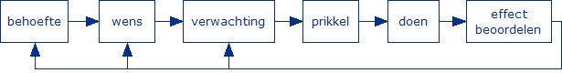

Volgens de redactie van Ensie is motivatie de bereidheid hebben tot het verrichten van en bepaald gedrag en zie je het vaak terug komen in de psychologie, criminologie en pedagogiek. Synoniemen van motivatie zijn bijvoorbeeld motief en beweegreden, al deze begrippen worden gebruikt om aan te geven waarom iemand iets doet of waarom ze specifiek gedrag tonen in specifieke situaties.
J. Stevens zegt dat je motivatie kunt onderdelen in motivatie en zelfmotivatie. Zelfmotivatie is hoe goed je je eigen motivatie kunt aanpreken en hoe erg je je zelf aan kunt zetten om iets te gaan doen. Maar ze zeggen ook dat je zelf verantwoordelijk bent voor je eigen motivatie. Volgens Stevens zijn er verschillende factoren die een rol spelen bij motivatie: inzet, ambitie, initiatief en discipline. Ook al kun je hier op letten ligt het ook deels aan ze zelf en aan je insteling. Je kunt natuurlijk ook je zelfmotivatie gaan trainen.
Leren.nl schrijft dat motivatie het gevoel is dat je aanzet tot het beginnen én afmaken van een taak. Ze stel dat motivatie in een proces verloopt en dat voor iedereen dit proces voor iedereen in dezelfde stappen verloopt:
Carmen van Dutch4health zegt dat je motivatie kunt verdelen in 2 onderdelen: intrinsieke en extrinsieke motivatie. Intrinsieke motivatie die van binnenuit komt, hiermee wordt bedoelt dat je jezelf hebt gemotiveerd om iets te doen. Met extrinsieke motivatie komt dus van buitenaf. Dit is motivatie die je krijgt van iemand in jou omgeving, omdat deze van mening is dat je een bepaalde actie moet uitvoeren.
Dan Pink verteld ons dat als je gaat kijken naar The Candle Problem dat het ongeveer 5-10 min duurt tot dat je het antwoord hebt, want dan overkom je functional Fixedness. Door gebruik te maken van The Candle Problem kun je Kracht van Incentives: verdeel alle mensen in 2 groepen. Dan vertel je groep 1 dat je gaat meten hoelang ze er over doen en groep 2 dat ze beloningen krijgen bijvoorbeeld geld, want geld is een geode motivator. Dan zie je dat groep 1 sneller is dan groep 2. Dit is raar: In de industrie gaan we ervan uit dat als je wilt dat mensen beter presteren, je ze moet belonen toch, ze inspireren? Hier zie je dat dat niet altijd waar is, je hebt een proef die je op 1 ding laat focussen en zorgen dat mensen hun creativiteit gaan gebruiken. Hier gebeurd dat niet en doet het zelfs het tegenovergestelde, ook blokeerd het de creativiteit. how we motivate people (like in businesses) is built entirely around these extrinsic motivators. This reward-and-punisment doesn't always work anymore and often does harm. We kunnen dus stellen dat movivatie het beste werkt als er duidelijke regels en 1 oplossing is, anders werkt het vaak niet en kan het zelfs negatieve effecten hebben. Je kunt dus ook stellen dat in een zekeren zit we allemaal bezig zijn met het oplossen van onze eigenversie van The Candle Problem en hier werkt die beloning-en-straf motivatie niet. Scienentist hebben gezocht naar een nieuw idee voor de bedrijven om te zorgen dat we beter kunnen gaan werken. Ze zijn op de volgende 3 dingen uitgekomen en dit zijn volgens hun de bouwblokken voor een helemaal nieuw systeem voor onzen bedrijven:
L. van der Veenvind net als Dan dat mensen vrij moeten zijn om zichzelf uit moeten dagen. Ook zij vind dat het belangrijk is om gemotiveerd te blijven, maar daar hebben ze wel meer autonomie voor nodig. Hierdoor kan de intrinsieke motivatie omhoog gaan en komen er dus beteren resultaten.
Volgens M. van Oosterhoutzouden mensen meer vrijheid moeten krijgen om te werken en zelf moeten kunnen kiezen hoe laat, waar en wanneer ze werken. Hiermee is Dan het ook eens. hierdoor zouden de resultaten omhoog moeten gaan, omdat je dan kun focusen om problemen op meerdere manieren op te lossen.
Volgens de prestatiemotivatie quiz kwam er dit uit: Je bent in redelijke mate
intrinsiek
gemotiveerd en in redelijke mate extrinsiek gemotiveerd. Dat je redelijk intrinsiek
gemotiveerd bent
betekent dat je het best leuk vindt om te studeren. Maar hèèl leuk vind je het nou
ook weer niet. Dat je in
redelijke mate extrinsiek gemotiveerd bent wil zeggen dat je er ook rekening mee houdt wat je met je studie
kunt bereiken: een diploma, geld, status of de erkenning van de mensen waar je van houdt. Op zich
is er
niks mis met jouw motivatie. Wèl zou je gelukkiger zijn als je studie wat beter zou passen
bij je
werkelijke interesses.
Ik ben het met dit resultaat eens, ik vind dat als ik echt iets wil bereiken dat ik erg gemotiveerd kan
zijn om
dingen te bereiken. Op de middelbaren wilde ik bijvoorbeeld vwo blijven doen ookal zijn school dat ik beter
halverwegen 4 vwo beter kon overstappen naar 4 havo, maar is wilde persee 4 vwo afmakken. Dit heb ik ook
gedaan, omdat ik gemotiveerd was om het af te maken.
Mijn belangrijkste 2 ankers zijn Creativiteit en Zekerheid. Ik denk dat Creativiteit voor mij heel belangrijk is, omdat ik op een andere manier denk dan de meeste om me heen. Ook vind ik het erg fijn om met mn handen bezig te zijn en het liefst op mn eigen manier. Ook vind ik het fijn om creativiteit te uiten in bijvoorbeeld muziek te maken, ik speel zelf saxofoon en ik probeer mezelf gitaar en keyboard/piano te leren. Ik denk dat Zekerheid belangrijk voor me is, omdat ik graag duidelijkheid wil hebben. Ik denk dat dit een beetje een autistisch trekje is. Als we op vakantie gaan wil ik ook graag de infomatie hebben en dat soort dingen. Mijn minst belangrijke anker is Status voor mij het minst belangrijk is, omdat ik meer motivatie heb om iets goed te doen dan dat ik een van de beste ben.
Ik denk dat de conclussie dus is dat als ik wil dat ik erg gemotiveerd kan zijn. Mijn sterkste ankers zijn Creativiteitn en zekerheid, dit zie ik ook vaak terugkomen in mijn leven. Dit is dus mijn conclusie